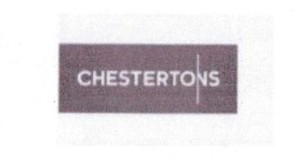

Trade Mark Journal No.2025/009 28 February 2025
UK00004158681 7 February 2025 (7,12)

- Class 7
- Attachments for excavators; Attachments for bulldozers; Attachments for cranes; Excavators; Excavators [earth moving machines]; Excavators being moveable machines; Excavators being self propelled machines; Excavators for hydraulic expansion machines; Construction vehicles, other than for transportation purposes; Soil engaging parts for agricultural implements; Locomotive cranes; Forestry machines; Horticultural implements [machines]; Soil spreading apparatus [machines]; Soil moving apparatus [machines]; Grabs [parts of machines]; Hay grippers [machines or parts of machines]; Grippers for cranes; Aerial platforms for use with cranes; Elevating apparatus; Agricultural elevators; Lifting tongs for cranes; Hydraulic motors for excavators; Hydraulic excavators; Hydraulic lifts; Wood grippers (Hydraulic -) for forestry use; Mini excavators; Cranes [lifting and hoisting apparatus]; Couplings for agricultural implements; Loaders for agricultural machines; Agricultural, gardening and forestry machines and apparatus; Agricultural machines; Mobile cranes; Agricultural implements, other than hand-operated; Palletisation machines; Pallet transferring machines; Buckets for use with hydraulic lifting machines; Shovels, mechanical; Mechanical shovels [machines]; Shovel loaders [machines]; Dozer shovels; Valves [parts of machines]; Snow cutting attachments for vehicles; Snow plough blades; Self-propelled cranes; Self-propelled working platforms; Stacking machines [other than fork-lift trucks].
- Class 12
- Construction vehicles for transportation purposes; mobile fork lifts; vehicles incorporating bucket loaders; loaders [fork-lift trucks]; forklift trucks; forklifts, and structural parts therefor; all-terrain fork-lift trucks having a telescopic arm; municipal tractors; pallet transfer trucks; steps for attachment to land vehicles; parts and fittings for vehicles; parts and fittings for land vehicles; tractors; horticultural tractors; tractors for agricultural purposes; tractor drawn land vehicles.
W & S Power Equipment Limited
Representative: Dennis Ware